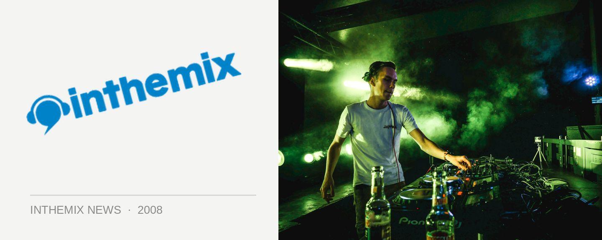

Destination arrives in Sydney next Friday
If you’re one of those clubbers who’s been gunning for ‘Breaks 08’, here’s a great place start… The Destination? series of parties have been rocking the Perth breaks scene for the past few years, and next Friday night it’ll be making its debut in Sydney when it launches at its monthly home at The Cross, with a special guest performance from UK break and tech-funk legends Koma And Bones, no less.
The Destination? team built the brand into quite a formidable force over its four years of rocking the Perth scene: it’s now a record label, artist agency, events and promotion team as well as a regular series of parties that continue to entertain the Perth breaks scene at Ambar every month. As a measure of its success, in 2007 it became the first club night in Australia to be nominated at the international Breakspoll awards in the UK, and because of its presence as a record label and booking agent, is regularly able to secure the services of high-quality international acts to play at their events.
After a warmup event in January with the Wanna Break crew, the minds behind Destination? in Perth are now bringing the concept to Sydney and hope to fill the void in our scene by providing a rocking series of monthly breaks events. Koma and Bones will be headlining, who’ve been a regular name in breaks and tech-funk for nearly a decade and they’ll be joined by fellow international Clive Morley, a rising name in the UK scene and a regular at Fabric for the Plump DJs’ Eargasm night.
Wanna taste the Destination? Experience? Get on down to The Cross nightclub in Kings Cross next Friday where the action will be kicking off.